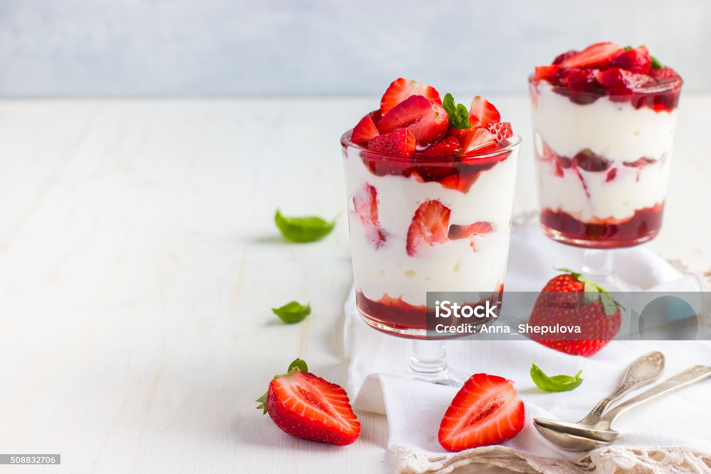

Esta pagina fue hecha para la reposteria que necesita satisfacer las necesidades del cliente
mostrando y brindando un servicio al cliente
para que pueda comprar y mostrar sus problemas de manera mas limpia y pura

El término "postre" proviene del latín «postrerum», que significa "después", ya que son alimentos que se consumen después de las comidas principales. Su origen se remonta a la Antigua Roma, donde se acostumbraba a servir dulces como frutas y panes con miel entre los platos salados de los festines. Con el tiempo, el concepto evolucionó y los árabes introdujeron nuevos ingredientes como la miel y los frutos secos, mientras que el descubrimiento del azúcar en Asia y su posterior cultivo en Europa permitió la creación de una mayor variedad de postres.